AutoControl lets you add customizable buttons to the browser's toolbar to perform any desired action.
Inside AutoControl's configuration page, go to Options and then Custom Toolbar Buttons.
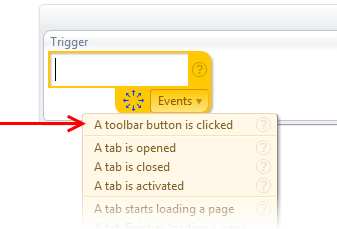
A click on any of these buttons triggers the Toolbar btn clicked event, which you can find in the Events menu when you enter a trigger.
Let's see a few examples of using these buttons.
On this example, we'll have a toolbar button pop up a menu with our entire bookmarks tree.
Let's start by creating an action and set Toolbar btn 1 as the trigger. Then let's set open menu as the action and
choose "Bookmarks" as the menu to open. That's it.
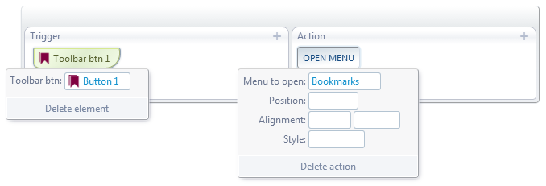
The result will look like this:
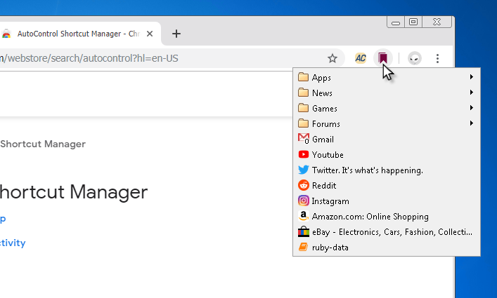
Ok, that was way too easy, let's complicate things a bit. Now let's have the button do a second action if we click it while holding Ctrl down.
That way, the button will serve two purposes: with Ctrl held down, it will instead show a horizontal toolbar with bookmarks from a specific folder.
Let's call this folder our "Frequent Sites".
Go ahead and create another action and set the trigger as shown below. The action side is more elaborate this time, though.
You have to create a custom menu. Click below on the right side to follow the steps.
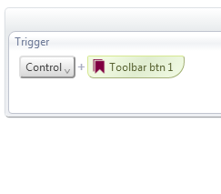
Step 0/0: undefined
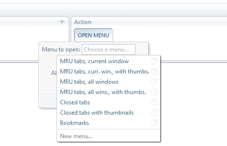
That's all. Now, when you hold down Ctrl and click on the button, you'll see something like this:
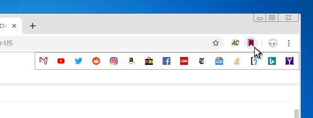
If that's not enough, you could add a third action to this same button.
For example Alt+Toolbar btn 1 for opening the Bookmark Manager page. But, we'll leave that as an exercise for the reader.
Reopen closed tabs
For this second button, we'll have it do two functions as well. A normal click will reopen the last closed tab,
whereas a click while the right mouse button is pressed will show a menu with all closed tabs and windows.
The first action is trivial to set up. Here it is:
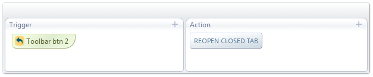
For the second action, the trigger requires a new trick. The mouse's Right Btn has a native action (opening the context menu),
so in order to prevent that action when we do the combination Right Btn+Toolbar btn 2,
we have to override it as shown below.
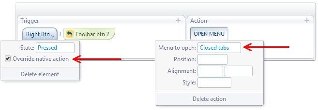
So, now when you hold down the right mouse button and click with left button, you'll see a menu with all your closed tabs and windows.
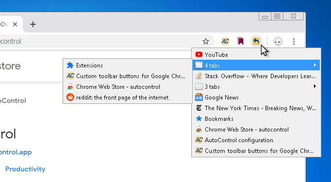
At this point you may be thinking. . . this is like two whole extensions from the Web Store combined into a single button.
That's right!
Trigger keyboard shortcuts
If there's a native keyboard shortcut for the action you want, but you hate typing shortcuts...
No problem! Just add a toolbar button that triggers the action for that shortcut.
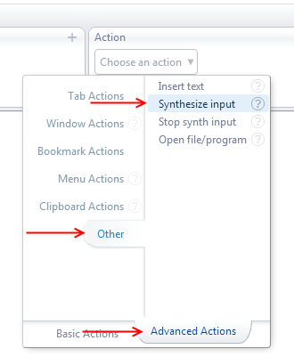
The Synthesize Input action is ideal for this. You found it in the Advanced Actions tab, under the section Other.
As an example, we'll configure a button that opens the "Print..." dialog box by sending the Ctrl+P combination.
Start by creating a new action and choose Toolbar btn 3 as the trigger. On the action side, choose synthesize input
and enter Ctrl+P as if you were typing the actual shortcut.
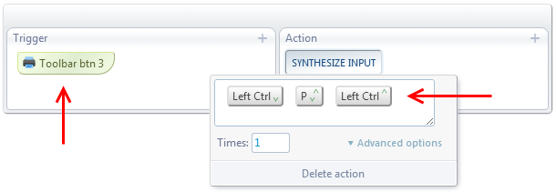
That's it. Now, whenever you click the button with the printer icon, the Print dialog box will show up.
Ok, let's make good use of the real estate and give the button a second function. If we click it with Ctrl held down, we want to open Windows' "Print..." dialog box instead
(which is different from Chrome's own "Print..." dialog).
Chrome's native shortcut for that action is Ctrl+Shift+P.
So, we create a new action exactly as before, but we set Control+Toolbar btn 3 as the trigger
and we enter Ctrl+Shift+P as the keyboard combination.
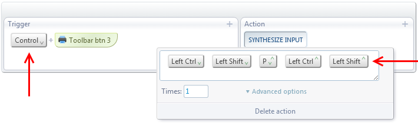
You can employ this technique with any keyboard shortcut supported by Chrome.
Find a full list of shortcuts at this page.
That's all. Now you are ready to add buttons to Chrome's toolbar and make them perform whatever action you want.
 Forum
Install now from theChrome Web Store
Forum
Install now from theChrome Web Store